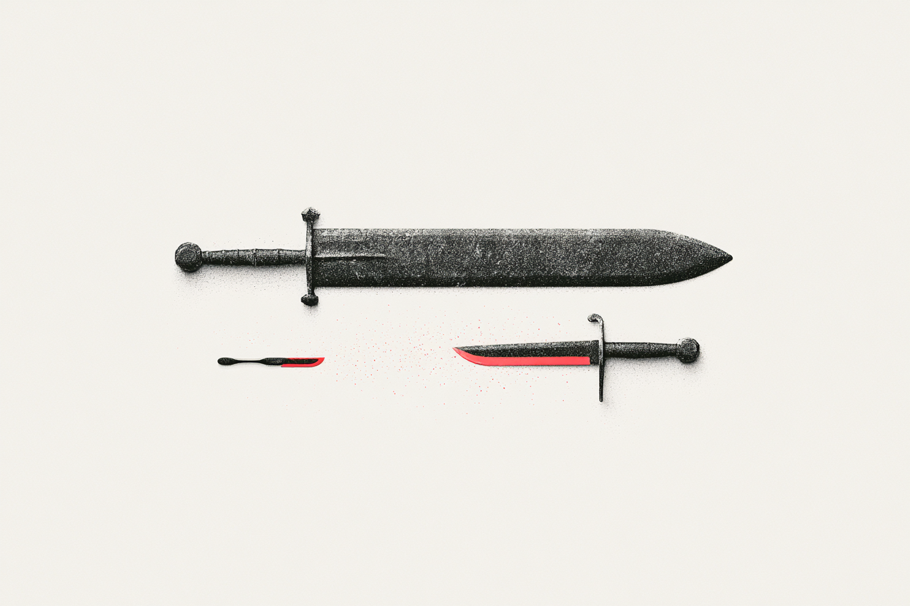

A one-line framing of the engagement - what you'll deliver and why it matters now.

Frame the shift in one or two sentences. AI agents are becoming the primary way people discover, compare, and act - and the infrastructure that's ready first wins distribution.
Agent-ready infrastructure compresses partner onboarding from weeks to days.
Be discoverable when AI search becomes the default distribution channel.
The APIs are the system. We add the agent layer on top of proven foundations.
Identify the highest-impact AI features, then assess how the platform can support them - and what needs to be added.
Take one real unit of work from the backlog and deliver it end-to-end. Proof of delivery speed, not a conversation about it.
Together: what to build, whether the platform supports it, and evidence that we can deliver.
Ranked list tied to business metrics, validated with stakeholders, benchmarked against competitors.
Each use case mapped to the reference architecture. What exists, what to enhance, what to add.
Evaluated against best practices - integration, orchestration, security, data, reusability.
One real backlog item delivered end-to-end with test cases and documentation.
| Week | Stream 1 · Discovery + Architecture | Stream 2 · Speed to Market |
|---|---|---|
| 1 | Competitive landscape delivered. Stakeholder interviews conducted. | Backlog item selected. Option agreed. Pod deployed. |
| 2 | Use cases mapped to business metrics. Architecture walkthrough. | Pod begins delivery. |
| 3 | Feature-to-architecture mapping. Best-practices assessment. | Mid-sprint checkpoint. |
| 4 | All deliverables presented. | Unit of work delivered with tests and docs. |
A 2-day reconciliation process cut to 10 minutes - productionised within a single 10-day sprint.
Reverse-engineered 20+ years of legacy code in under a week - surfacing critical bugs the team didn't know existed.
Full case studies with methodology and outcomes available under NDA upon request.
Timeline: 4 weeks
Timeline: 4 weeks
Assumes reasonable scope likely to finish in the given timeline. Subject to discussion on exact scope.
Interviews with 3–5 people across business and tech.
A walk-through of the microservices and orchestration layer.
Small, self-contained, with clear acceptance criteria.
One person who can unblock questions.
Let's build the proof point.